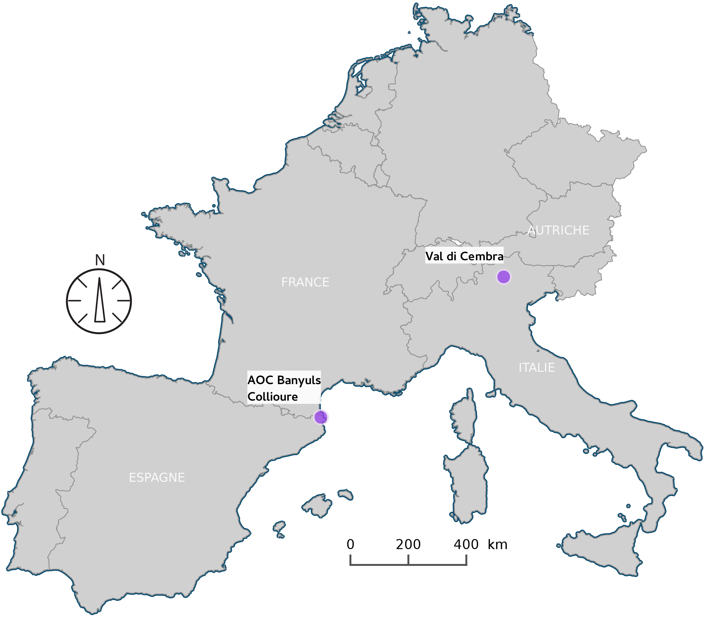

Les SMA pour modéliser les pratiques viticoles avec la plateforme GAMA
Par Etienne Delay et Patrick Taillandier MAPS-10 -- 22 juin 2017 -- Olérons
Flash-back

Définitions des problématiques et des terrains d'études
Le contexte général
- La viticulture de montagne et de fortes pentes ne fait pas l'objet d'études spécifiques
- La tendance est à l'abandon des pentes au profit d'une viticulture mécanisée en plaine
Réfléchir et explorer les influences des spécificitées liées à la pente dans les pratiques socio-spatiales viticoles
Les spécificités de la viticulture de pentes
- Des terrains souvent pauvres, rapidement reconnus comme qualitatifs
- Des conditions de travail difficiles, qui interdisent la mécanisation
- Un accès aux parcelles complexes et des distances temps accentuées par la pente
- Une structuration sociale particulière qui fait la part belle aux petits exploitants et au système coopératif
Les problématiques
Explorer les interactions société ⇔ environnement pour proposer une lecture et une compréhension renouvellées du fonctionnement de la viticulture de pente
Les terrains d'études : localisation
Les terrains d'études : description

Banyuls-sur-mer

La val di Cembra
Overview

Lobesias botrana et la viticultures
La viticulture dans le monde

L. bortrana est considérées comme le principal ravageurs de la vigne cultivée depuis la crise du phylloxera (Roehrich et al. 2000)
Lobesias botrana ?
- L. bortrana ravageur polyphage (Tasin et al. 2006),
- la femelle libère des phéromones (Briand 2009)
- C'est une espèce thermo-sensible
Où

L'AOC Banyuls - Collioure
Comment

- Depuis 1999, un suivi de l’infestation sur des parcelles témoins (GDA)
- Depuis 2012, 11 capteurs de température effectuant des relevés toutes les 10 minutes (TERVICLIM)
Comment
3 années de comptage dane une parcelle témoin
Les questions
- La confusion sexuelle a-t-elle un impact sur les populations d’eudémis simulées ?
- L’espace est-il un facteur influençant la dynamique de population du parasite ?
- Quelles sont les stratégies de lutte intégrée optimale pour lutter contre ce microlépidoptère ?
- Quelles sont les conséquences d’un passager clandestin dans la lutte intégrée ?
Un modèle, deux implementations
Implémentation avec Netlogo

Un modèle complexe
Les +
- Large communauté, très réactive (#stackoverflow)
- Primitive simple
Mais des limites...
- Passage à l’échelle (~ 300 000 agents)
- Interface "figée" (une seule fenêtre d’affichage)
- Environnement spatial « contraint »
- une seule grille
- pas de géométries pour les agents
Gama - skyrocket
- Puissant
- SIG facile à importer
- versatile = addaptable (multi-interface c.f. LittoSim)
- architecture modulaire (java)
Un environnement intégré
Coupler modélisation et simulation
Différentes topologies
Intégration de données spatiales
Modèles multi-niveaux
Différents formalismes
Reflexes, équations différentielles, machine à états finis, architecture cognitive (BDI)
Nombreux outils de visualisation
Affichage 3D (avec textures, lumières et cameras), par couche, nombreux types de graphiques (séries, histogramme, radar, heatmap…)
Des outils dédiés à la définition de jeux sérieux
Le Model CeLL dans GAMA?
C'est possibles ?
Le Model CeLL dans GAMA
Le Model CeLL dans GAMA en video
Quelques résultats
moyenne de 10 sample sur 10 (a), 20 (b), 30 (c) replication
Slides
Not a coder? Not a problem. There's a fully-featured visual editor for authoring these, try it out at http://slides.com.
Point of View
Press ESC to enter the slide overview.
Hold down alt and click on any element to zoom in on it using zoom.js. Alt + click anywhere to zoom back out.
Touch Optimized
Presentations look great on touch devices, like mobile phones and tablets. Simply swipe through your slides.
Fragments
Hit the next arrow...
... to step through ...
... a fragmented slide.
Fragment Styles
There's different types of fragments, like:
grow
shrink
fade-out
fade-up (also down, left and right!)
current-visible
Highlight red blue green
Transition Styles
You can select from different transitions, like:
None -
Fade -
Slide -
Convex -
Concave -
Zoom
Themes
reveal.js comes with a few themes built in:
Black (default) -
White -
League -
Sky -
Beige -
Simple
Serif -
Blood -
Night -
Moon -
Solarized
Slide Backgrounds
Set data-background="#dddddd" on a slide to change the background color. All CSS color formats are supported.
Image Backgrounds
<section data-background="image.png">Tiled Backgrounds
<section data-background="image.png" data-background-repeat="repeat" data-background-size="100px">Video Backgrounds
<section data-background-video="video.mp4,video.webm">... and GIFs!
Background Transitions
Different background transitions are available via the backgroundTransition option. This one's called "zoom".
Reveal.configure({ backgroundTransition: 'zoom' })Background Transitions
You can override background transitions per-slide.
<section data-background-transition="zoom">Pretty Code
function linkify( selector ) {
Code syntax highlighting courtesy of highlight.js.
Marvelous List
- No order here
- Or here
- Or here
- Or here
Fantastic Ordered List
- One is smaller than...
- Two is smaller than...
- Three!
Tabular Tables
| Item | Value | Quantity |
|---|---|---|
| Apples | $1 | 7 |
| Lemonade | $2 | 18 |
| Bread | $3 | 2 |
Clever Quotes
These guys come in two forms, inline:
“The nice thing about standards is that there are so many to choose from”
and block:
“For years there has been a theory that millions of monkeys typing at random on millions of typewriters would reproduce the entire works of Shakespeare. The Internet has proven this theory to be untrue.”
Intergalactic Interconnections
You can link between slides internally, like this.
Speaker View
There's a speaker view. It includes a timer, preview of the upcoming slide as well as your speaker notes.
Press the S key to try it out.
Export to PDF
Presentations can be exported to PDF, here's an example:
Global State
Set data-state="something" on a slide and "something"
will be added as a class to the document element when the slide is open. This lets you
apply broader style changes, like switching the page background.
State Events
Additionally custom events can be triggered on a per slide basis by binding to the data-state name.
Reveal.addEventListener( 'customevent', function() {
console.log( '"customevent" has fired' );
} );
Take a Moment
Press B or . on your keyboard to pause the presentation. This is helpful when you're on stage and want to take distracting slides off the screen.
Much more
- Right-to-left support
- Extensive JavaScript API
- Auto-progression
- Parallax backgrounds
- Custom keyboard bindings